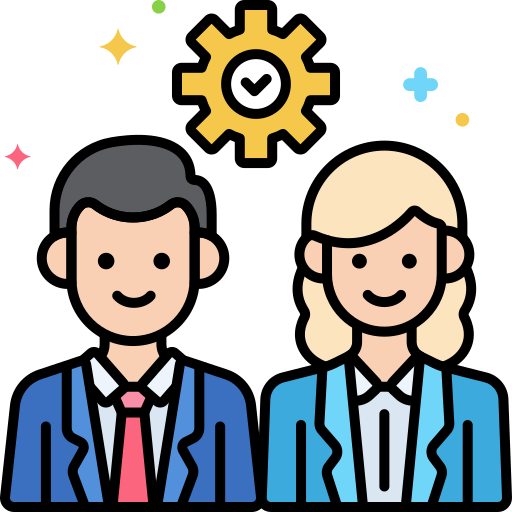

Neste site você ficará sabendo de tudo sobre Ciência da Computação. Esse ramo possui diversas áreas. Leia mais para ficar por
dentro!
FACULDADES
Fique por dentro das faculdades que se destacam nesse curso, veja as notas de corte,
especializações e onde cursar. Corra atrás da sua aprovação!

PROFISSIONAIS
Aqui você também encontrará informações sobre os princiapis profissionais dessa área, e por
fim, poderá ter acesso à uma entrevista.
Curso
O curso
Competências profissionais
Durante o curso, deverão ser desenvolvidas nos alunos aptidões, habilidades gerais,
competências técnicas, atitudes e posturas que contribuirão significativamente para
o exercício de sua profissão.
Visão sistêmica e holística da área de computação;
Profundo conhecimento de aspectos teóricos, científicos e tecnológicos relacionados à área de computação;
Eficiência na operação de equipamentos computacionais e sistemas de software;
Capacidade de, com base nos conceitos adquiridos, iniciar, projetar, desenvolver, implementar, validar e gerenciar qualquer projeto de software;
Facilidade para desenhar e utilizar softwares de desenho;
Capacidade para projetar e desenvolver sistemas que integrem hardware e software;
Capacidade para avaliar prazos e custos em projetos de software; Saber ouvir;
Competência e compromisso com a utilização de princípios e ferramentas que otimizem o processo de desenvolvimento e implementação de um projeto e lhe confiram um alto grau de qualidade;
Competência para identificar, analisar e documentar oportunidades, problemas e necessidades passíveis de solução via computação, e para empreender na concretização desta solução;
Capacidade para pesquisar e viabilizar soluções de software para várias áreas de conhecimento e aplicação;
Atuar em equipes multidisciplinares;
Aplicação eficiente dos princípios de gerenciamento, organização e busca de informações;
Conhecimento de aspectos relacionados à evolução da área de computação, de forma a poder compreender a situação presente e projetar a evolução futura;
Conhecimentos de aspectos relacionados às tecnologias de mídias digitais.
Grade Curricular
Quando você vai escolher uma graduação para impulsionar a carreira, é importante conhecer o que se estuda para
entender se terá familiaridade com a área. Com esse preparo, não corre o risco de chegar ao meio do curso e se
frustrar por não ter visto algumas disciplinas que achava importante.
Veja no caso da tecnologia. Pesquisar o que se aprende no curso de Ciência da Computação é um bom indício para
justificar sua escolha pelo curso — já que existem tantas opções segmentadas na área. Uma análise e comparação das
grades curriculares de diferentes instituições de ensino também faz toda a diferença para, no fim das contas, ter a
melhor formação.
Neste conteúdo, trazemos algumas disciplinas da grade curricular de Ciência da Computação. Confira e descubra se a
carreira é para você!
Cálculo I ( matemática )
Física I
Geometria Analítica
Introdução a Programação ( Programação I )
Lógica Matemática
Sistemas Digitais ( Eletrônica Básica )
Introdução as Redes de Computadores ( Redes I )
Cálculo II ( matemática )
Física II
Introdução a Programação Assembly
Estrutura de Dados ( Programação II )
Arquitetura de Computadores
Redes II
Análise de Algoritmos
Inteligência Artificial I
Cálculo Vetorial ( Cálculo III )
Sistemas Operacionais I
Banco de Dados I
Computação Gráfica ( Programação III )
Inteligência Artificial II
Banco de Dados II
Economia
Direito
Trabalho de Conclusão de Curso ( TCC )
Estágio
Atualmente, quase todos os setores das organizações e empresas em geral utilizam dos processos da Ciência da Computação para manter a comunicação e os processos fluindo sem nenhum problema. Por essa razão, como um estudante ou recém-formado na área, um estágio em Ciência da Computação acaba por te apresentar o mundo e o trabalho desse tipo de conhecimento.
Embora algumas pessoas possam acreditar que um estágio é menos necessário para uma carreira de programador e mais importante para quem está entrando em pesquisa, toda experiência com certeza vai te ajudar ao longo de sua carreira em Ciência da Computação, além de ser extremamente benéfica para o seu currículo.
Além disso, embora a graduação em Ciência da Computação possa oferecer muito conhecimento acadêmico na área, um estágio oferece experiência e compreensão para aplicar em situações reais. Eles não apenas ajudam a aprimorar seu conjunto de habilidade e ferramentas usadas, mas também indicam aos empregadores que você é ambicioso e se preocupa com sua carreira e mostra que você tem o que é preciso para se sair bem.
O estágio não será de caráter obrigatório, ficando a critério do aluno realizá-lo ou não, desde que o mesmo esteja regularmente matriculado no curso de Bacharelado em Ciências da Computação
Carga horária
O curso de Bacharelado em Ciência da Computação oferece 01 (uma) disciplina Eletiva de Estágio Supervisionado, totalizando uma carga horária de 360 horas de atividades, que deverão ser cumpridas em um semestre letivo.
Média salarial
No cargo de Estágio em Ciência da Computação se inicia ganhando R$ 904,00 de salário e pode vir a ganhar até R$ 1.341,00. A média salarial para Estágio em Ciência da Computação no Brasil é de R$ 1.105,00.
Faculdades
Pontifícia Universidade Católica do Rio de Janeiro (PUC-Rio) - Particular
Um curso de pós-graduação é realizado após a conclusão de uma graduação, por isso recebe esse nome, e é muito indicado para quem quer aumentar as chances de desenvolver a carreira e se aprofundar em uma determinada área. Os tipos de pós-graduação se dividem em stricto sensu e lato sensu.
MBA
O significado da sigla MBA – Master in Business Administration representa um curso de pós-graduação lato sensu, voltado à atuação prática profissional. Investir em conhecimento é a melhor forma para crescer profissionalmente e desenvolver habilidades pessoais para liderar equipes e dominar processos de produção
MBA x Pós-graduação
A diferença entre MBA e pós-graduação é o foco do grau acadêmico. Enquanto o MBA é voltado à formação empresarial e executiva, a pós-graduação é uma formação destinada à especialização em determinada área.
Especializações
Especialização é uma pós-graduação Lato Sensu destinada aos profissionais que estão no mercado de trabalho. Também é para aqueles que buscam um diferencial no currículo para conseguir uma oportunidade. É uma capacitação que visa a desenvolver habilidades técnicas específicas em determinada área de formação
Mestrado e Doutorado
Mestrado é um grau acadêmico recebido por um indivíduo e concedido por uma instituição de ensino superior, normalmente por uma universidade. O mestrado é considerado um curso de pós-graduação stricto sensu, ou seja, que possui entre 2 a 5 anos de duração.
Doutorado é o passo seguinte ao mestrado. É um curso muito voltado a quem quer se aprofundar em pesquisa científica e seguir carreira acadêmica. O doutorado dura em média de quatro a cinco anos e exige dedicação intensa.
Mercado de trabalho
A área de TI possui um mercado em constante crescimento, mesmo com a instabilidade financeira vivenciada nos últimos anos. A perspectiva é que o profissional de tecnologia tenha o maior aumento salarial de 2019, cerca de 11,76%. O mercado de trabalho de Ciência da Computação acompanha o desenvolvimento da área de Tecnologia da Informação.
Entre os locais que disponibilizam vagas estão as empresas dos diferentes setores, empresas de TI, órgãos públicos, indústrias, além de poder atuar como pesquisador, desenvolvendo estudos de investigação e crescimento da área.
Áreas de atuação
Analista de sistemas
O analista de sistemas atua na área de Tecnologia da Informação (TI) desenvolvendo soluções específicas em sistemas informatizados para empresas. Ele analisa, documenta, projeta, implementa, testa e gerencia os sistemas de informações necessários para os negócios de seus clientes ou empregadores.
Seu trabalho envolve o estudo de hardware (componentes físicos do computador), do software (sistemas de processamentos de dados do computador) e da utilização pelo usuário final.
O profissional da análise de sistemas realiza um intenso processo de planejamento e possíveis caminhos para um projeto, dividido em concepção, elaboração e implementação. A administração dos dados produzidos por estes sistemas também é de responsabilidade do analista de sistemas.
Cientista da computação
O cientista da computação possui habilitação para desenvolver sistemas e aplicações, determinar a interface gráfica, implantar decisões tecnológicas e trabalhar com a parte estrutural do banco de dados, além da codificação dos programas. Em outras palavras, um profissional que está envolvido com soluções computacionais desde situações básicas até ambientes mais complexos de resolução.
De acordo com a página do curso no Quero Bolsa, o profissional pode projetar, implantar e realizar manutenção de aplicações ou sistemas. Além disso, o cientista da computação seleciona os seus recursos de trabalho. Ou seja, ele é o responsável por adotar metodologias de desenvolvimento de sistemas, linguagem de programação e ferramentas de desenvolvimento.
Portanto, o cientista da computação desenvolve e gerencia ferramentas, sistemas ou programas que permitem o funcionamento de toda estrutura computacional.
Desenvolvedor de aplicativos
desenvolvedor de aplicativos é o profissional responsável por todas as etapas relativas à criação e ao aprimoramento de aplicativos. Em outras palavras, em conjunto com uma equipe, ele atua na criação do projeto do aplicativo, na forma como ele será estruturado, nas linguagens de programação utilizadas, na experiência que o usuário terá ao utilizá-lo, entre outros.
Trata-se de um profissional cada vez mais requisitado, uma vez que os aplicativos para celular são cada vez mais presentes na vida de bilhões de pessoas em todo o mundo.
Engenheiro de software
O engenheiro de software trabalha no desenvolvimento de programas de computador, buscando a inovação e a ciência para garantir maior desempenho e produtividade dos setores da economia. Além de desenhar e testar novos programas, o engenheiro de software é responsável por realizar manutenção, revisão e atualização deles.
Entre os programas desenvolvidos pelo engenheiro de software estão jogos, aplicativos, plataformas digitais para atividades de educação, sistemas específicos para áreas como a médica e bancária, entre outros. O engenheiro de software também pode gerenciar projetos e negócios de empresas de computação.
Programador
O programador é o profissional que cria, desenvolve e mantém diferentes tipos de softwares em sistemas amplos ou para uso em computadores pessoais. Ele usa linguagens de programação, como html, java, c++, para criar comandos em programas, criando novas funcionalidades e utilidades.
Os programadores desenvolvem e aperfeiçoam websites, aplicativos, programas de computador, sistemas operacionais, sistemas de empresas, redes sociais, com infinitas possibilidades de atuação quando falamos de algo tão extenso quanto a rede e a tecnologia. Por isso, é um profissional cada vez mais essencial em qualquer ramo do mercado de trabalho.
O programador também lida com coleta de dados de usuários e posterior análise para tomadas de decisões assertivas e bem fundamentadas no desenvolvimento de produtos e serviços.
Salário e média salarial
Salário médio no Brasil
Cientista da computação
R$ 3.368.11
Salário médio por estado
Rio de Janeiro
R$ 4.038,71
Salário médio por especialidade
Programador multimidia
R$ 5.480,50
Salário de um cientista por especialidade
Especialidade
Salário Médio
Programador Multimídia
R$ 5.480,50
Programador de Máquinas - Ferramenta com Comando Numérico
R$ 5.395,85
Programador de Internet
R$ 4.439,87
Programador de Sistemas de Informação
R$ 3.816,04
Conselhos
O que é um conselho profissional?
O conselho de classe profissional é uma organização formada pelos trabalhadores de uma profissão.
Além de representar a classe, ele regulamenta a atividade profissional, determina limites da atuação, fiscaliza o exercício da profissão para garantir que os serviços sejam prestados da forma correta à sociedade, orienta profissionais e efetua registros. Esse último existe para garantir que apenas pessoas formadas exerçam uma profissão.
Sociedade Brasileira da Computação (SBC)
Segundo site oficial da Sociedade Brasileira de Computação (SBC), a SBC é uma Sociedade Científica sem fins lucrativos, fundada em 24 de Julho de 1978, que reúne estudantes, professores, profissionais, pesquisadores e entusiastas da área de Computação e Informática de todo o Brasil. A SBC tem como função facilitar o acesso à informação e cultura por meio da informática, promover a inclusão digital, incentivar a pesquisa e o ensino em computação no Brasil, Além de contribuir para a formação do profissional da computação com responsabilidade social.
Conselho Federal de Informática (CONFEI)
A turma de TI espalhada pelo Brasil afora sempre reclama da falta de representatividade e regulação das profissões de TI…bom, parece que temos uma luz no fim do túnel. Um projeto de lei está tramitando no Senado Federal e tem como objetivo regulamentar o mercado profissional de Tecnologia da Informação, conforme noticiou a ComputerWorld. O que antes abrangia somente a profissão de analista de sistemas, foi expandido para regular diversas profissões em TI, atitude esperada e inteligente, diga-se de passagem.
Esse é o conselho que se pretende criar, a exemplo dos tradicionais conselhos como o CRM, CRO, CREA, e por aí vai. A sua função é identificar as especializações dos profissionais de informática e estabelecer suas denominações e atribuições, além de julgar profissionais acusados de quebra de ética.
Profissionais
Bill Gates é, sem sombra de dúvidas, um dos nomes mais conhecidos do mundo da tecnologia. Garoto prodígio, já trabalhava com programação e desenvolvimento de softwares desde a sua infância e adolescência. Frequentou Harvard cursando Matemática e Direito, mas largou ambos cursos no terceiro ano.
Aos 19 anos fundou a gigante Microsoft em parceria com Paul Allen, em 1975. No início dos anos 80 desenvolveu o primeiro computador pessoal para a IBM, utilizando um sistema já desenvolvido e personalizando-o para o uso como sistema operacional. Deu-se então a criação do MS-DOS.
Desde 1988 Gates dedica a maior parte do seu tempo em ações filantrópicas por meio da Fundação Bill e Melinda Gates. A organização foi criada em 2000 e tem como principais objetivos promover a pesquisa contra doenças como a AIDS e o desenvolvimento de fontes de energia limpas e sustentáveis.
Mark Zuckerberg é uma das estrelas da tecnologia mais famosas do mundo. Ficou mundialmente famoso pela criação da rede social Facebook e pela aquisição de outras várias redes e aplicativos de grande utilização, como Instagram e Whatsapp.
É desenvolvedor de programas desde a adolescência e criou o tão aclamado Facebook durante seu segundo ano da faculdade, em Harvard. Inicialmente feito apenas por diversão, o projeto se transformou em uma das ferramentas de comunicação e interação mais acessadas em todo o mundo.
Além disso, rendeu a Mark uma fortuna atualmente avaliada na casa dos 60 bilhões de dólares e é considerado hoje o quinto homem mais rico do mundo.
Satya Nadella é o atual CEO da Microsoft, tendo entrado para o cargo em 2014 quando substituiu Steve Ballmer. Formou-se em Engenharia pela Manipal Institute of Technology e mudou-se para os Estados Unidos para cursar um MBA em Ciência da Computação.
Durante sua trajetória na Microsoft, ocupou posições de grande importância como a vice-presidência de Cloud e Enterprise, vice-presidência corporativa de negócios, divisão de negócios e outros.
Foi um dos responsáveis pela migração para a computação em nuvem e o desenvolvimento de uma das maiores infraestruturas no mundo para esse serviço. Foi ponte de negociações importantes como o relacionamento com a rival Lynux e a aquisição da Mojang, que é criadora do Minecraft.